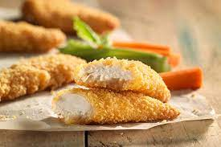

Chicken Fingers

Chicken fingers with crunchy chip coating. Great with bbq sauce. My 3 year old helps crush the chips. Very easy to make!
- PREP - 10 minutes
- COOK - 20 minutes
- TOTAL - 30 minutes
- SERVINGS - 6 people
Ingredients
- 2 pounds skinless, boneless chicken breast halves - cut into strips
- 2 eggs, beaten
- 1 (12 ounce) package tortilla chips, crushed
Directions
- Preheat oven to 400 degrees F (200 degrees C).
- Mix egg beat and milk in a shallow dish or bowl; place crushed chips in a separate shallow dish or bowl. Dip chicken first in egg mixture, then in crushed chips to coat. Place coated chicken on an ungreased cookie sheet.
- Bake in preheated oven for 10 minutes; turn sides and bake for another 10 minutes.
Home Page